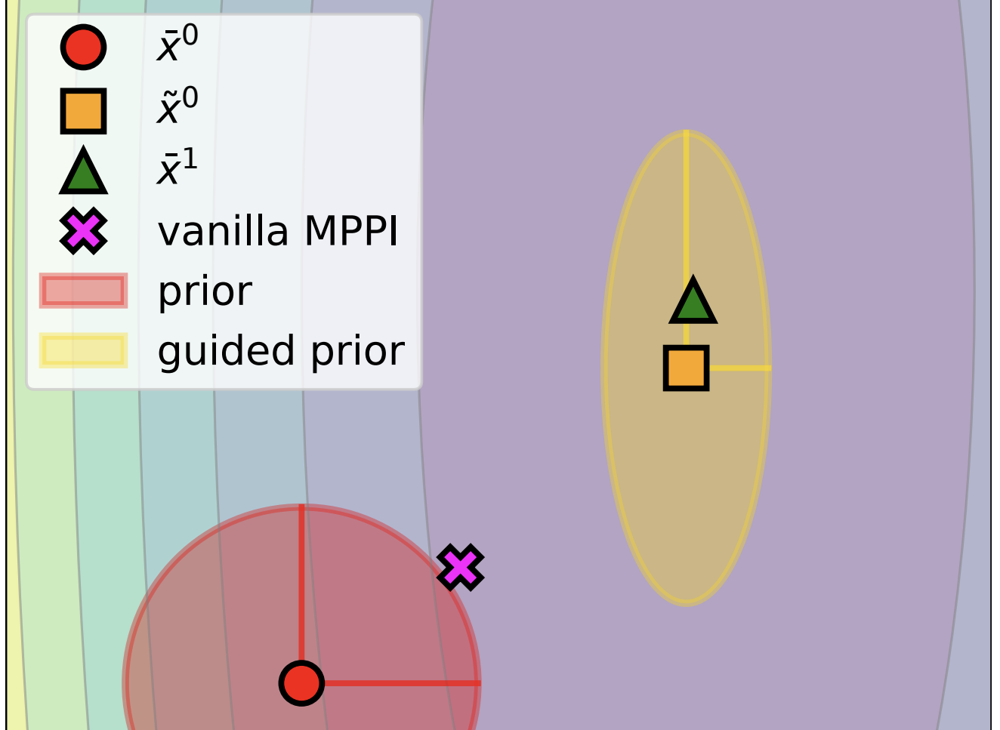
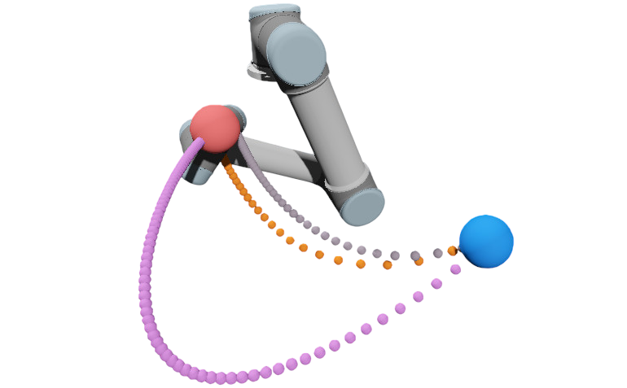

Nguimatsia Tiofack
I am a second-year Ph.D. student in the Willow team at Inria and Ecole normale supérieure ENS-PSL, advised by Justin Carpentier.
My research lies at the intersection of reinforcement learning, optimization, and planning with applications in robotics. I currently collaborate closely with Théotime Le Hellard and Fabian Schramm.
My academic background spans mathematics, statistics, and machine learning. I began with a Bachelor's in mathematics and computer science from the university of Dschang, followed by a Master's in Mathematics from the University of Yaoundé I and a dual Engineering degree from ENSAE Paris and ISSEA Yaoundé, with major in statistics and machine learning. I also hold the MVA (Mathematics, Vision, Learning) Master's degree from ENS Paris-Saclay.
Research
 SVL: Goal-Conditioned Reinforcement Learning as Survival Learning
SVL: Goal-Conditioned Reinforcement Learning as Survival Learning
Franki Nguimatsia Tiofack,
Fabian Schramm,
Théotime Le Hellard,
Justin Carpentier
Preprint
ArXiv

Variance-Reduced Model Predictive Path Integral via Quadratic Model Approximation
Fabian Schramm,
Franki Nguimatsia Tiofack,
Marc Toussaint ,
Justin Carpentier
Preprint
ArXiv
 Guided Flow Policy: Learning from High-Value Actions in Offline RL
Guided Flow Policy: Learning from High-Value Actions in Offline RL
Franki Nguimatsia Tiofack* ,
Théotime Le Hellard*,
Fabian Schramm*,
Nicolas Perrin-Gilbert,
Justin Carpentier
International Conference on Learning Representations (ICLR) 2026
Website
•
ArXiv
•
Github
•
Video

Accelerating trajectory optimization with Sobolev-trained diffusion policies
Théotime Le Hellard*,
Franki Nguimatsia Tiofack*,
Quentin Le Lidec,
Justin Carpentier
World Symposium on the Algorithmic Foundations of Robotics (WAFR) 2026
ArXiv